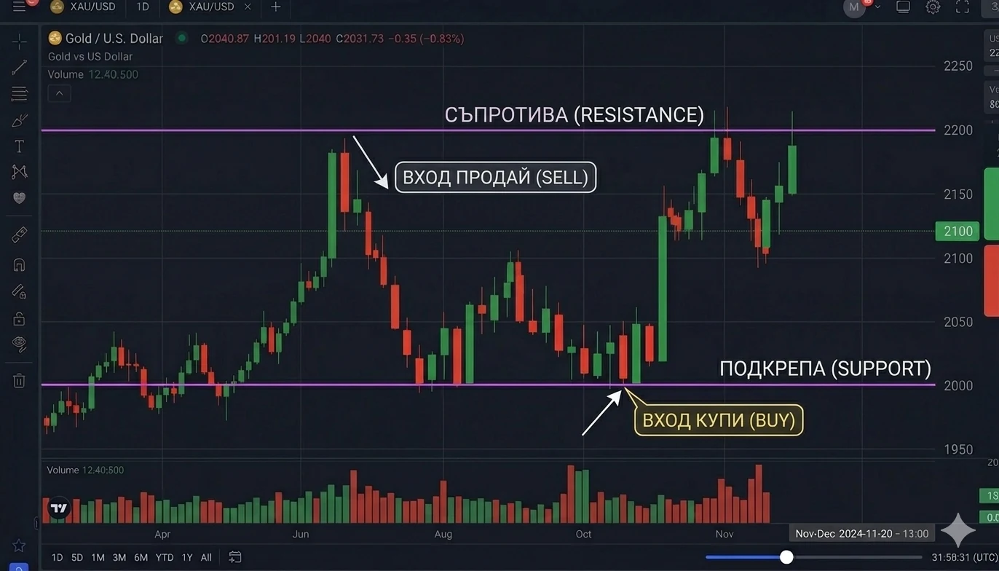

Подкрепа
Цената пада към област, в която преди са се появявали купувачи и движението нагоре е започвало или се е ускорявало.
Пример
Златото пада до 2 000, задържа се и се покачва до 2 050. Областта около 2 000 става кандидат за подкрепа.
Подкрепата и съпротивата са ценови области, в които преди е имало видима реакция. Те помагат да определиш къде да наблюдаваш пазара – не ти казват автоматично кога да купиш или продадеш.
Област, в която спадът преди е спирал или се е забавял.
Цената пада към област, в която преди са се появявали купувачи и движението нагоре е започвало или се е ускорявало.
Златото пада до 2 000, задържа се и се покачва до 2 050. Областта около 2 000 става кандидат за подкрепа.
Област, в която покачването преди е спирало или се е забавяло.
Цената се покачва към област, в която преди са се появявали продавачи и движението нагоре е спирало или се е обръщало надолу.
Златото се покачва до 2 100, не успява да продължи и пада до 2 050. Областта около 2 100 става кандидат за съпротива.

Пазарът рядко реагира до един и същ тик.
Когато на графиката виждаш няколко близки върха или дъна, по-разумно е да маркираш област, която обхваща реакциите, вместо да приемаш една цена за магическа граница. Фитилите, спредът и волатилността могат да доведат до малки разлики.
На D1 отбелязвай по-големите зони. На H4 ги уточнявай според последните видими реакции. На H1 търси потвърждение, а не просто докосване.
Старото ниво понякога започва да действа в обратната посока.
Цената пробива съпротивата нагоре, задържа се над нея и по-късно се връща надолу. Ако зоната задържи цената, старото ниво може да действа като подкрепа.
Цената пробива подкрепата надолу и по-късно се връща нагоре към нея. Ако не успее да премине над зоната, тя може да действа като съпротива.

Зоната е място за наблюдение – не готов сигнал.
Подкрепата може да се пробие, а съпротивата може да бъде преодоляна. Нивата са ориентири за вероятни реакции, не гарантирани обръщания.
Цената затваря под подкрепа и после се връща към нея отдолу. Каква роля може да има зоната при новия тест?
Отговор: Може да се превърне в съпротива, ако цената не успее да се върне трайно над нея.